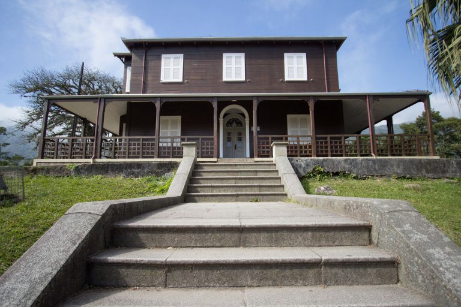
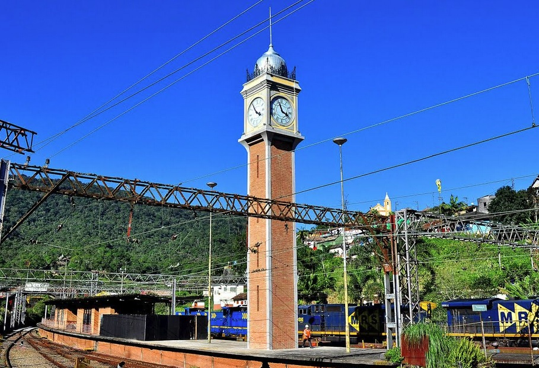
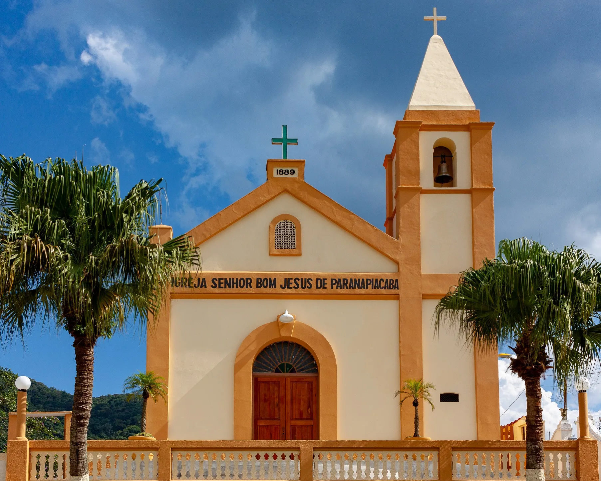

O Castelinho é uma edificação construída em 1897 para ser a residência do engenheiro-chefe da ferrovia, de onde ele gerenciava o tráfego de trens na subida e descida da Serra do Mar. Principal construção arquitetônica da parte baixa, o Castelinho foi restaurado em 2005. É a maior casa da vila, de grande valor arquitetônico, implantada isoladamente em local privilegiado (sobre uma elevação natural, em ponto estratégico e que representa a escala maior), com janelas espalhadas em seu redor, fornecendo uma visão panorâmica da vila. Por causa da sua localização, ela foi chamada de “Castelo” pelos trabalhadores, e foi com esse nome que o local ficou conhecido. Atualmente abriga peças da ferrovia e a memória social da vila. O Museu apresenta uma exposição permanente com acervo da casa do engenheiro-chefe da empresa SPR - São Paulo Railway Co. (mobiliário, quadros, relógios etc.), uma maquete física de toda a Vila, cinco tótens instalados no piso superior com fotos da vista das janelas do Museu Castelo, aproveitando a posição estratégica da construção, e possui também banners distribuídos por todas as salas que contam a história da implantação da Vila Ferroviária.
Museu do Castelo
De quase todos os pontos da vila, é possível ver o relógio da marca inglesa John Walker, réplica do Big Ben. Hoje um dos símbolos de Paranapiacaba, a peça exercia importante função para a ferrovia: garantia que os turnos de trabalho fossem cumpridos com a pontualidade britânica. "A vida na vila era orientada pelo relógio. que batia de meia e meia hora", afirma Lamarca. Com cerca de 20 metros de altura, o relógio salta aos olhos dos visitantes apesar da neblina. Fabricado na década de 1890 no Reino Unido, foi importado pelos ingleses junto com outros dois relógios bem conhecidos pelos paulistas: o da Estação da Luz, em São Paulo, e o da Estação Ferroviária de Santos. Passados quase 130 anos desde a sua chegada ao país, onde foi apenas montado, é o único dos três exemplares que preserva integralmente as peças originais. "O maquinário encontra-se conservado e em perfeito funcionamento", afirma Augusto Fiorelli, relojoeiro que faz a manutenção da estrutura e neto do responsável pelo Big Ben de Paranapiacaba na década de 1970. Desde 2003, Fiorelli sobe os cerca de 80 degraus da torre a cada oito dias para dar corda e garantir que o relógio siga badalando seu sino de 1,5 tonelada de hora em hora.
Torre do Relógio
Igreja Senhor Bom Jesuis
A igreja Senhor Bom Jesus de Paranapiacaba, originalmente denominada Capela Alto da Serra, tem uma história que remonta ao século XIX. Antes da inauguração da capela em 1889, a região já contava com um oratório, cujos registros mais antigos datam de 1880. A pedra fundamental da capela foi lançada em 3 de fevereiro de 1884, e a licença para celebração de missas foi concedida em 8 de agosto de 1884. Assim, a história dessa igreja já ultrapassa os 130 anos. Com a criação da Paróquia São José de Ribeirão Pires em 21 de dezembro de 1911, a igreja Senhor Bom Jesus do Alto da Serra passou a estar ligada a ela. Posteriormente, em 25 de fevereiro de 1956, a Paróquia Senhor Bom Jesus de Paranapiacaba foi oficialmente criada e erigida pela Diocese de Santo André, por meio do primeiro bispo diocesano Dom Jorge Marcos de Oliveira. Atualmente, a paróquia faz parte da Igreja Matriz de Rio Grande da Serra - Paróquia São Sebastião, situada na Região Pastoral Ribeirão Pires - Rio Grande da Serra. O padroeiro, Senhor Bom Jesus, é celebrado em 6 de agosto, e nessa data são realizadas diversas festividades na Vila de Paranapiacaba em sua homenagem. A história da igreja Senhor Bom Jesus de Paranapiacaba é um testemunho da devoção e importância religiosa que acompanha a região há mais de um século. Sua trajetória, desde o pequeno oratório até a paróquia erigida, representa a fé e a devoção dos fiéis que frequentam esse espaço sagrado. A celebração anual do padroeiro é um momento especial que une a comunidade em torno de sua fé e fortalece os laços culturais e religiosos da Vila de Paranapiacaba.